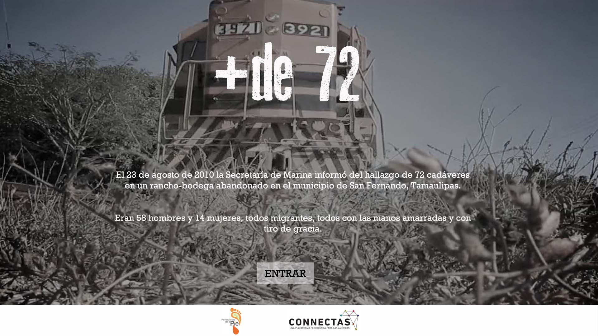

Mas de 72
El 23 de agosto de 2010 la Secretaría de Marina informó del hallazgo de 72 cadáveres en un rancho-bodega abandonado en el municipio de San Fernando, Tamaulipas.
Eran 58 hombres y 14 mujeres, todos migrantes, todos con las manos amarradas y con tiro de gracia.
Este proyecto realizado por el equipo de investigación de Periodistas de a Pie y periodistas invitados, con fondos de la iniciativa Connectas y el ICIJ, evidencia de manera gráfica, con fuentes y de forma sistematizada las inconsistencias de la información oficial y plantea las preguntas que aún deben responder las diversas instancias de gobierno.
LOGOS



{% endblock content %}
{% block scripts %}
{% endblock %}